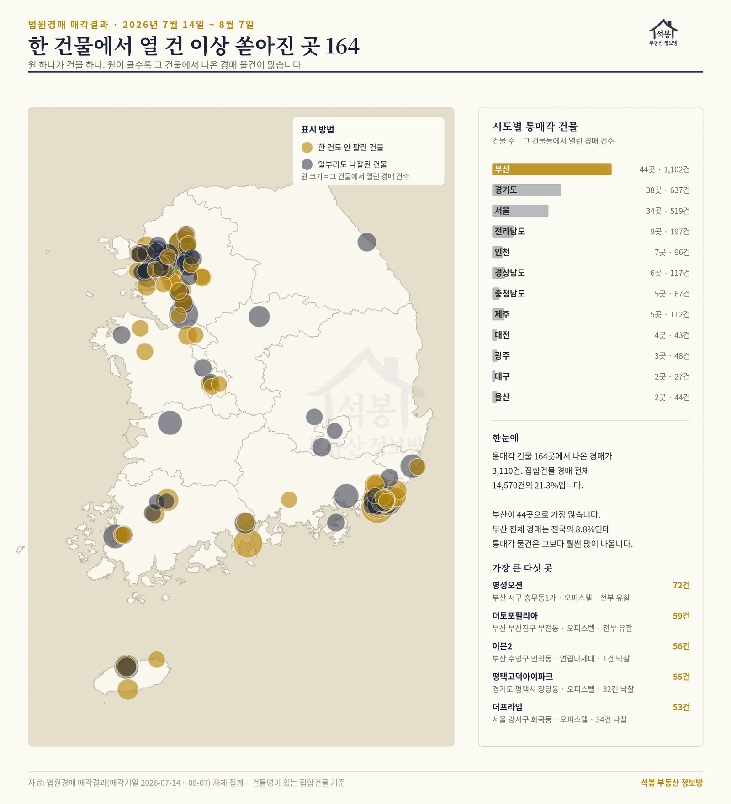
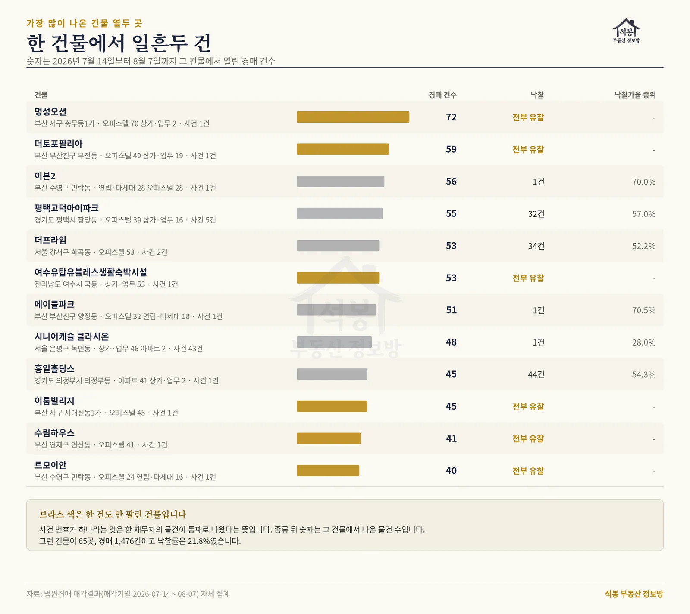
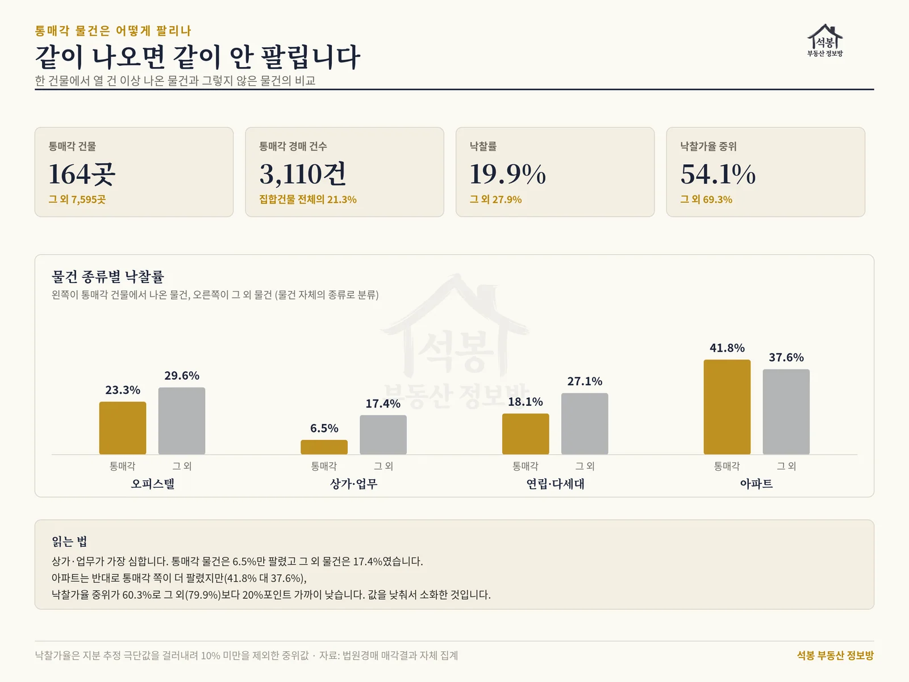

경매 물건이 늘었다는 기사를 보면 보통 이렇게 상상합니다. 대출을 못 버틴 집주인들이 여기저기서 하나씩 넘어가고 있겠거니. 그런데 실제 매각결과를 열어 보면 다른 장면이 섞여 있습니다. 한 건물이 통째로, 수십 호실이 같은 날 같은 법정에 올라옵니다. 7월 중순 이후 25일치 경매 결과를 전건 세어 보니 이런 물건이 생각보다 훨씬 많았습니다. 집합건물 경매 다섯 건 중 한 건이 그렇습니다.
4 · 경기 의정부시 의정부동 · 45호실 중 44건 낙찰, 이 글에서 가장 잘 소화된 곳
동네 이름을 누르면 그 지역 실거래 시세가 지도에서 바로 열립니다. 입찰가를 가늠할 때 감정가보다 먼저 봐야 할 자료입니다.
먼저, 무슨 일이 벌어지고 있나
지난 7월 28일 국제신문이 부산 상권 기사를 냈습니다. 예전에는 개인 투자자가 대출 이자를 못 버텨 상가 한두 호실을 넘겼는데, 요즘은 시행사가 지은 건물이 상가와 오피스텔을 달고 통째로 경매에 들어온다는 내용이었습니다. 기사에는 부산 몇 곳이 사례로 나왔습니다.
그래서 세어 봤습니다. 전국 법원경매 매각결과를 2026년 7월 14일부터 8월 7일까지 모으면 개찰이 27,704건입니다. 이 중 건물명이 붙는 집합건물(아파트, 오피스텔, 연립다세대, 상가, 업무시설)은 14,570건이고, 같은 시군구와 동, 같은 건물명으로 묶어 봤습니다.
한 건물에서 10건 이상이 열린 곳이 164개 건물. 여기서 나온 경매가 3,110건으로, 집합건물 경매 전체의 21.3%입니다. 다섯 중 하나가 한 건물에서 쏟아진 물건입니다.
그중 65개 건물은 사건번호가 하나였습니다. 소유자 여러 명이 우연히 같은 시기에 넘어간 게 아니라, 한 채무자의 물건이 통째로 올라왔다는 뜻입니다. 이 65곳에서 나온 경매만 1,476건입니다.

전국 분포 지도
여기서부터는 회원에게 보여드립니다
카카오 로그인 3초면 전문을 읽을 수 있습니다. 무료입니다.
가입하시면 지역 시장조사 보고서(약식)를 2회 무료로 요청하실 수 있습니다.
이미 회원이면 같은 버튼으로 로그인만 됩니다
가장 많이 나온 열두 곳
건물별로 줄을 세우면 이렇습니다.
건물
위치
물건 구성
경매
낙찰
명성오션
부산 서구 충무동1가
오피스텔 70 상가 2
72
0
더토포필리아
부산 부산진구 부전동
오피스텔 40 상가 19
59
0
이븐2
부산 수영구 민락동
연립 28 오피스텔 28
56
1
평택고덕아이파크
경기 평택시 장당동
오피스텔 39 상가 16
55
32
더프라임
서울 강서구 화곡동
오피스텔 53
53
34
여수유탑유블레스 생활숙박시설
전남 여수시 국동
생활숙박 53
53
0
메이플파크
부산 부산진구 양정동
오피스텔 32 연립 18
51
1
시니어캐슬 클라시온
서울 은평구 녹번동
상가·업무 46 아파트 2
48
1
흥일홀딩스
경기 의정부시 의정부동
아파트 41 상가·오피스텔 4
45
44
이룸빌리지
부산 서구 서대신동1가
오피스텔 45
45
0
수림하우스
부산 연제구 연산동
오피스텔 41
41
0
르모이안
부산 수영구 민락동
오피스텔 24 연립 16
40
0
열두 곳 중 일곱 곳이 부산입니다. 그리고 여섯 곳은 낙찰이 한 건도 없습니다. 부산 서구 충무동1가 명성오션은 오피스텔 70호실과 상가 2호실, 모두 72건이 사건 하나로 올라와 전부 유찰됐습니다. 부산진구 부전동 더토포필리아는 59호실, 서구 서대신동1가 이룸빌리지는 45호실이 같은 결과였습니다.
정반대도 있습니다. 의정부시 의정부동 흥일홀딩스는 45건 중 44건이 팔렸습니다. 다만 낙찰가율 중위가 54.3%였습니다. 값이 감정가의 절반쯤으로 내려간 뒤에야 소화됐다는 뜻입니다.

상위 건물 순위
부산이 유독 많습니다
164개 건물을 시도별로 흩어 보면 부산 44곳, 경기 38곳, 서울 34곳 순입니다. 여기서 눈여겨볼 것은 순위 자체가 아니라 비율입니다.
부산 전체 경매는 전국의 8.8%(2,439건)입니다. 그런데 통매각 건물은 164곳 중 44곳으로 27%를 차지합니다. 경매 규모에 비해 통째로 나오는 건물이 세 배쯤 많은 셈입니다. 부산 경매 물건 구성을 보면 이유가 짐작됩니다. 부산은 오피스텔이 864건으로 가장 많고 그다음이 연립·다세대 456건, 아파트 390건, 상가·업무 365건입니다. 아파트가 아니라 오피스텔과 상가가 물량의 중심입니다.
전남이 9곳(197건)으로 네 번째인 것도 눈에 띕니다. 여수 국동 생활숙박시설 한 곳에서만 53건이 나왔습니다. 분양이 안 된 숙박시설이 경매로 넘어오는 흐름과 맞물립니다.
같이 나오면 같이 안 팔립니다
여기가 이 글에서 가장 중요한 대목입니다. 통매각 물건과 그렇지 않은 물건을 갈라서 비교해 봤습니다.
물건 종류별로 쪼개면 어디가 문제인지 더 분명해집니다. 통매각 건물 164곳 중 61곳은 오피스텔과 상가가 한 건물에 섞여 있어, 아래 표는 건물이 아니라 물건 하나하나의 종류로 나눈 것입니다.
종류
통매각 낙찰률
그 외 낙찰률
상가·업무
6.5%
17.4%
연립·다세대
18.1%
27.1%
오피스텔
23.3%
29.6%
아파트
41.8%
37.6%
상가·업무가 가장 심합니다. 통매각으로 나온 상가는 열다섯 건에 한 건꼴로 팔렸습니다. 반면 아파트는 통매각 쪽이 오히려 더 팔렸는데, 여기에 함정이 있습니다. 아파트 통매각 물건의 낙찰가율 중위는 60.3%로 그 외 아파트(79.9%)보다 20%포인트 가까이 낮습니다. 잘 팔린 게 아니라 싸져서 팔린 것입니다.

통매각 대 일반 물건 비교
왜 같이 나오면 안 팔릴까
1. 옆방 71개가 경쟁자입니다
혼자 나온 물건은 낙찰받으면 그 건물에서 그 물건 하나입니다. 그런데 72호실이 동시에 풀리면 사정이 다릅니다. 내가 하나를 받아도 나머지 71개가 뒤이어 나옵니다. 되팔 때도, 세를 놓을 때도 상대는 옆방입니다. 임대료든 매매가든 서로 깎아 내리는 구조가 됩니다. 응찰자들이 이걸 모를 리 없으니 값을 그만큼 낮춰 씁니다. 낙찰가율이 15%포인트 넘게 낮은 데는 이런 계산이 들어 있습니다.
2. 통째로 나온다는 건 대개 사업이 멈췄다는 신호입니다
한 사건으로 수십 호실이 올라오는 경우는 개인 소유자가 아니라 시행사나 신탁이 얽혀 있을 때가 많습니다. 미분양이 쌓여 이자를 못 버틴 결과인데, 이 경우 건물 자체가 아직 자리를 못 잡은 상태입니다. 상가라면 공실이 많고 관리비가 밀려 있을 수 있습니다. 이 부분은 매각물건명세서와 현황조사서를 직접 읽어야 확인됩니다.
3. 다만 아파트는 결이 다릅니다
같은 통매각이라도 아파트는 41.8%가 팔렸습니다. 살 사람이 명확하고 시세가 투명해서 값만 맞으면 소화됩니다. 의정부 흥일홀딩스가 45건 중 44건이 나간 게 그 예입니다. 통매각이라고 다 같은 물건이 아니라는 뜻이고, 종류를 먼저 봐야 하는 이유입니다.
입찰 전에 확인할 것
목록에서 물건을 봤을 때 순서는 이렇습니다.
첫째, 같은 건물에서 몇 건이 함께 나왔는지 세어 보십시오. 법원경매 사이트에서 같은 소재지로 검색하면 바로 나옵니다. 열 건이 넘으면 그때부터는 개별 물건이 아니라 건물 전체를 보는 눈이 필요합니다.
둘째, 사건번호가 하나인지 확인하십시오. 여러 사건이 우연히 겹친 것과 한 사건에서 통째로 나온 것은 성격이 다릅니다. 후자는 사업 자체가 정리 국면일 가능성이 큽니다.
셋째, 기준은 감정가가 아니라 그 동네 실거래입니다. 유찰이 반복되면 최저가는 계속 내려가고 무엇이든 싸 보입니다. 위에 걸어 둔 지도에서 같은 동네 비슷한 평형의 최근 거래를 먼저 확인하고 거기서 역산하시는 편이 안전합니다.
한 줄 요약
7월 14일부터 8월 7일까지 경매에서 한 건물에 열 건 이상 나온 곳이 164곳, 여기서 나온 물건이 집합건물 경매의 21.3%입니다. 이 물건들의 낙찰률은 19.9%로 나머지(27.9%)보다 낮고, 낙찰가율 중위는 54.1%로 15.2%포인트 낮습니다. 상가·업무가 6.5%로 가장 안 팔리고, 아파트는 팔리긴 하나 값을 20%포인트 낮춰서 팔립니다.
이번 집계는 법원경매 매각결과 공개자료 중 매각기일 2026년 7월 14일부터 8월 7일까지 결과가 확정된 개찰 27,704건을 대상으로 했습니다. 건물 단위 묶음은 시도·시군구·법정동·건물명이 모두 같은 경우로만 잡았고, 건물명이 없는 토지는 물론, 건물명이 있어도 집합건물이 아닌 단독·다가구주택은 대상에서 제외했습니다. 낙찰가율은 지분 매각으로 추정되는 극단값이 섞여 있어 10% 미만을 뺀 중위값을 썼습니다. 물건 종류별 비교는 건물의 대표 종류가 아니라 물건 하나하나의 용도 분류를 기준으로 했습니다. 경매 매각결과는 법원 사이트가 현행 목록만 공개해 과거 소급 수집이 되지 않으므로 이 글의 수치는 25일 단면이며(그중 실제로 매각기일이 열린 날은 18일), 전월 대비나 월별 추이로 읽으시면 안 됩니다. 개별 건물의 권리관계나 투자 가치를 보증하거나 평가하지 않습니다.
원자료: 법원경매 매각결과 공개자료(매각기일 2026년 7월 14일 ~ 8월 7일, 개찰 27,704건) · 석봉 부동산 정보방 자체 집계 · 부산 상권과 통매각 흐름 관련 서두 내용은 국제신문 2026년 7월 28일자, 부산일보 2026년 4월 16일자 보도 참고 · 기준일 2026년 8월 11일 · 편집·제작: 석봉 부동산 정보방 · 본 자료는 정보 제공 목적이며 투자 권유가 아닙니다.